호치민 이야기 세 번째 편이에요. 이번엔 고기부페 다녀온 얘기예요. 고기 먹고 싶은 날, 아이들이 있으면 식당 고르는 게 은근히 일이잖아요. 저희 집 두 아들이 2살, 6살이라 더 그렇거든요. 이번에 다녀온 곳은 투티엠 티소몰(Thiso Mall Sala) 안에 있는 "미트앤미트(MEAT & MEET)"예요. 깔끔하고 가격 대비 만족스러워서 기록해두려고 해요.
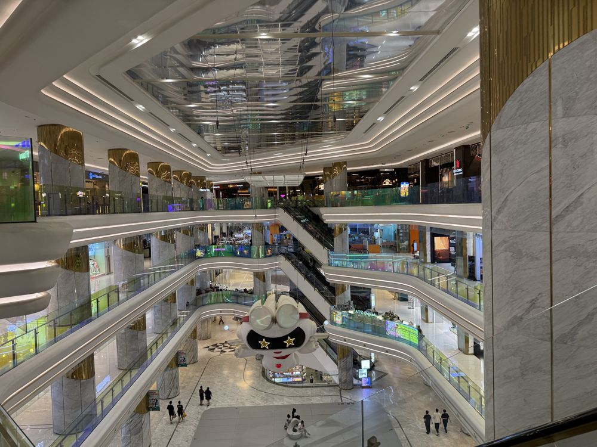
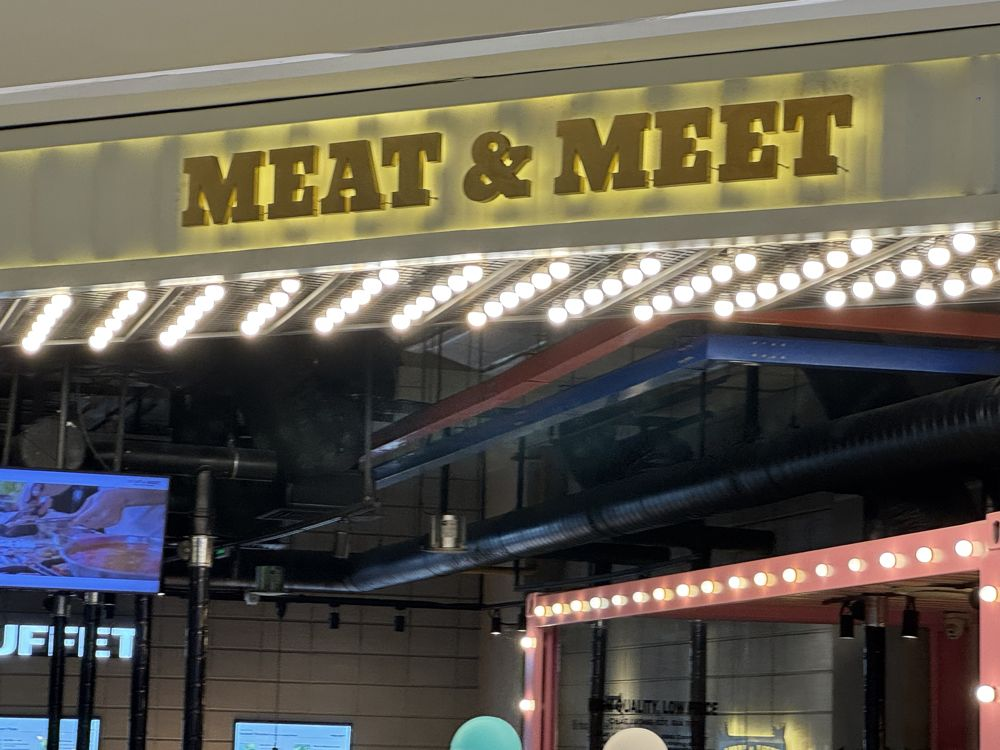
가격은 1인 249,000동, 저녁 부페 기준
입구에 있는 태블릿 메뉴판에 "BUFFET DINNER 249.000/NGƯỜI"라고 크게 적혀 있었어요. 1인당 249,000동이면 우리 돈으로 1만 4천 원 안팎이에요(환율에 따라 조금씩 달라져요). 이 가격에 숯불 고기랑 부페 코너를 다 이용할 수 있으니, 한국에서 고기 먹는 것과 비교하면 확실히 부담이 덜하더라고요.
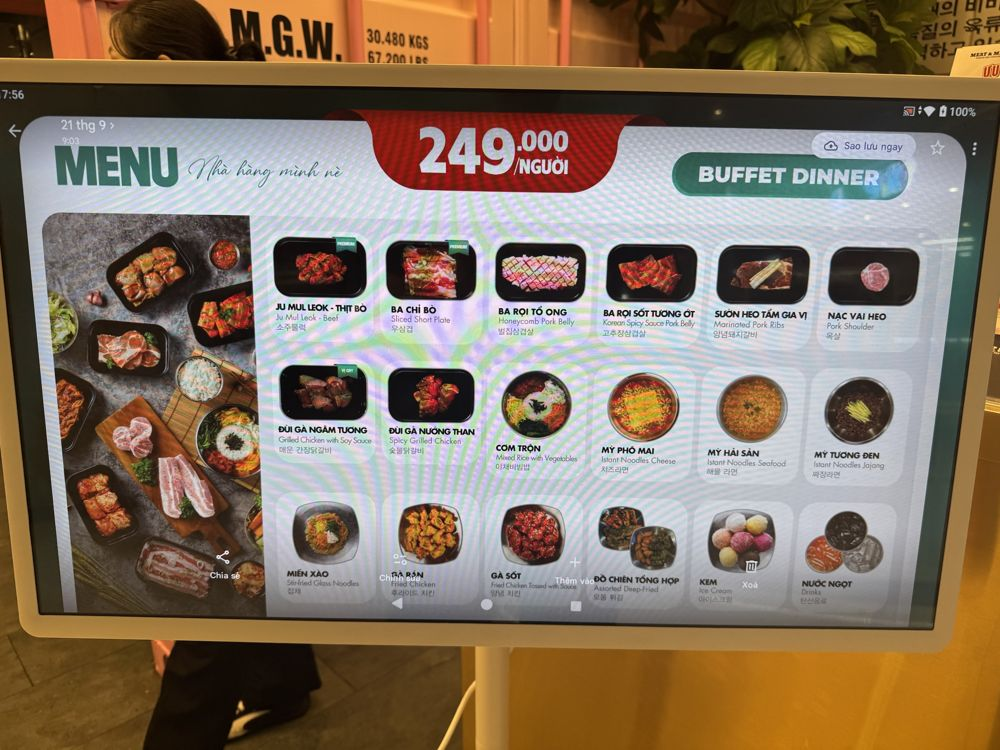
매장 안에 붙은 가격판을 보니 코스가 네 가지였어요. 점심 219,000동, 저녁 249,000동, 그 위로 329,000동, 429,000동 코스가 있었어요. 저희는 제일 위의 429,000동 콤보로 먹었는데, 먹고 나니 다음에는 기본 코스만 먹어도 충분하겠다 싶었어요. 기본 메뉴에도 양념 돼지갈비가 있어서 고기 맛보기엔 부족함이 없더라고요.
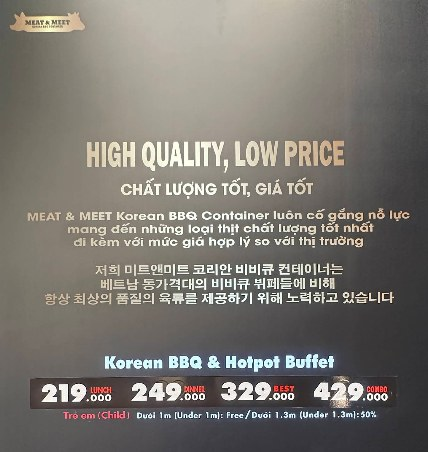
아이 요금은 키 기준이에요. 가격판에 1m 미만은 무료, 1.3m 미만은 50%라고 적혀 있었어요. 저희는 첫째가 50% 할인, 둘째는 무료였어요. 아이 둘을 데리고 가도 어른 요금에 절반 한 명분만 더 내면 되니, 아이가 둘인 집에는 꽤 반가운 구조예요.
부가세(VAT)와 별도 주문 음료는 따로 붙을 수 있고, 가격은 시기에 따라 바뀔 수 있어요.
자리는 넓고 깔끔했어요
테이블마다 숯불 화로와 환기 덕트가 내려와 있어서 연기 걱정이 덜했어요. 좌석은 푹신한 가죽 소파 자리라 아이들 데리고 앉기에도 편했고요. 테이블 세팅도 집게, 가위, 개인 접시까지 다 깔끔하게 준비돼 있었어요.
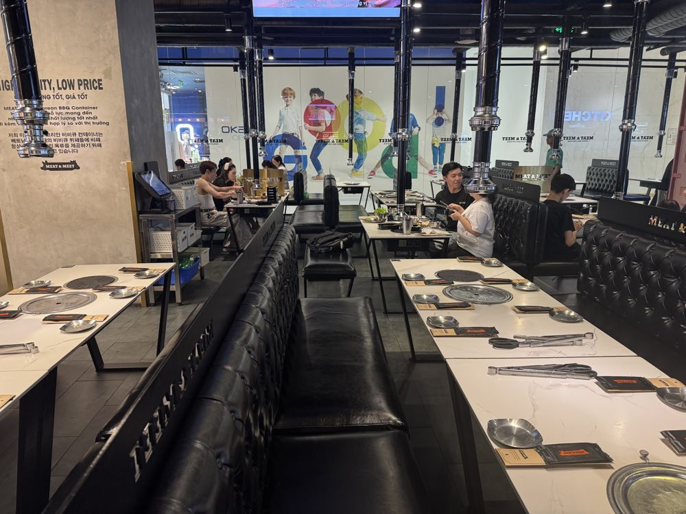
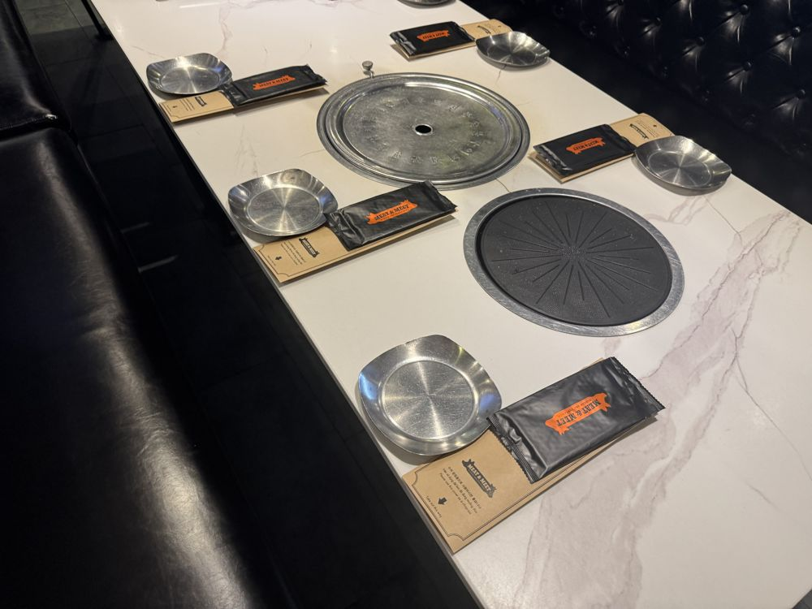
안쪽에는 아기 의자도 놓여 있는 게 보였어요. 2살 아이랑 갈 때는 이런 게 은근히 중요하잖아요.
고기 코너 — 소·돼지·닭 골라 먹는 재미
고기는 양념 고기를 직접 가져다 먹는 방식이었어요. 소고기 주물럭, 우삼겹, 벌집삼겹살, 고추장 삼겹살, 양념 돼지갈비, 목살, 그리고 닭다리 양념구이까지 종류가 꽤 다양했어요. 매운 양념과 간장 양념이 나뉘어 있어서 아이들은 간장 쪽을 고르면 되겠더라고요.
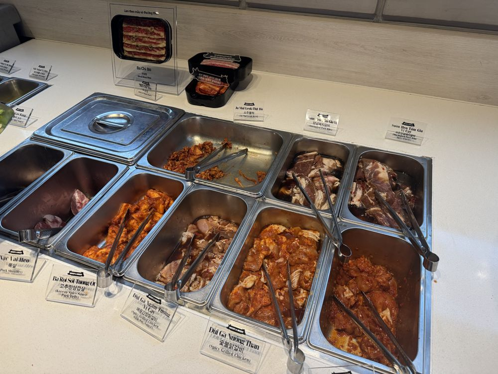
가져온 고기는 테이블 숯불에 직접 구워요. 숯 향이 은은하게 배어서 확실히 가스불보다 맛있더라고요. 다만 화로가 테이블 한가운데 있으니, 어린 아이랑 갈 때는 옆에서 잘 봐줘야 해요.
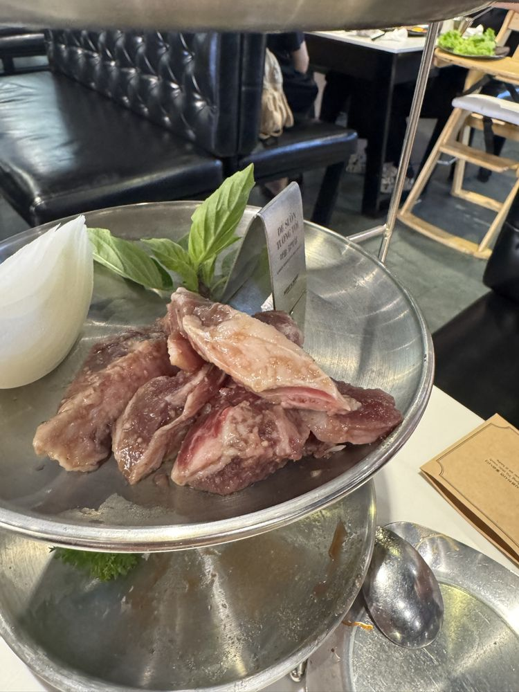
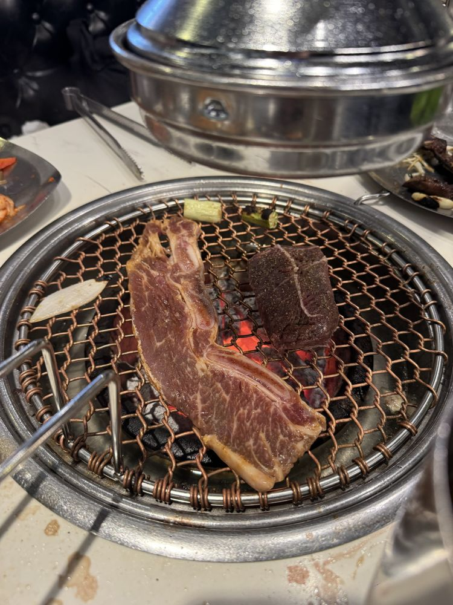
저희가 먹은 콤보에는 뼈갈비와 소고기가 듬뿍 올라간 얼큰한 전골도 나왔어요. 고기를 구워 먹다가 국물이 당길 때 딱이더라고요.
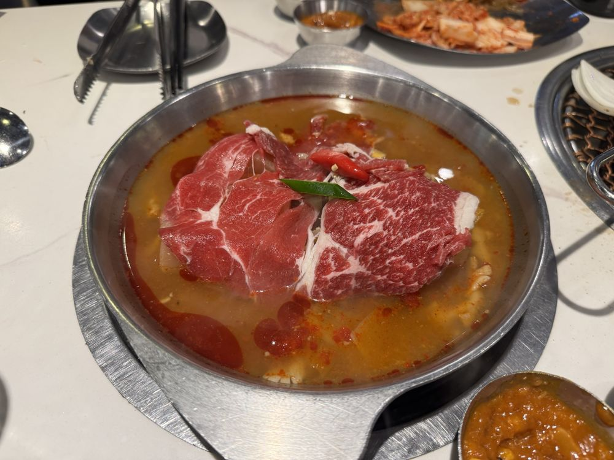
부페 코너 — 아이들 먹을 게 진짜 많아요
솔직히 이 집이 마음에 들었던 이유가 여기예요. 고기만 있는 게 아니라 아이들이 좋아할 만한 메뉴가 정말 많더라고요. 상추 같은 쌈 채소와 샐러드 채소, 오이·당근 스틱이 넉넉히 있었고요.
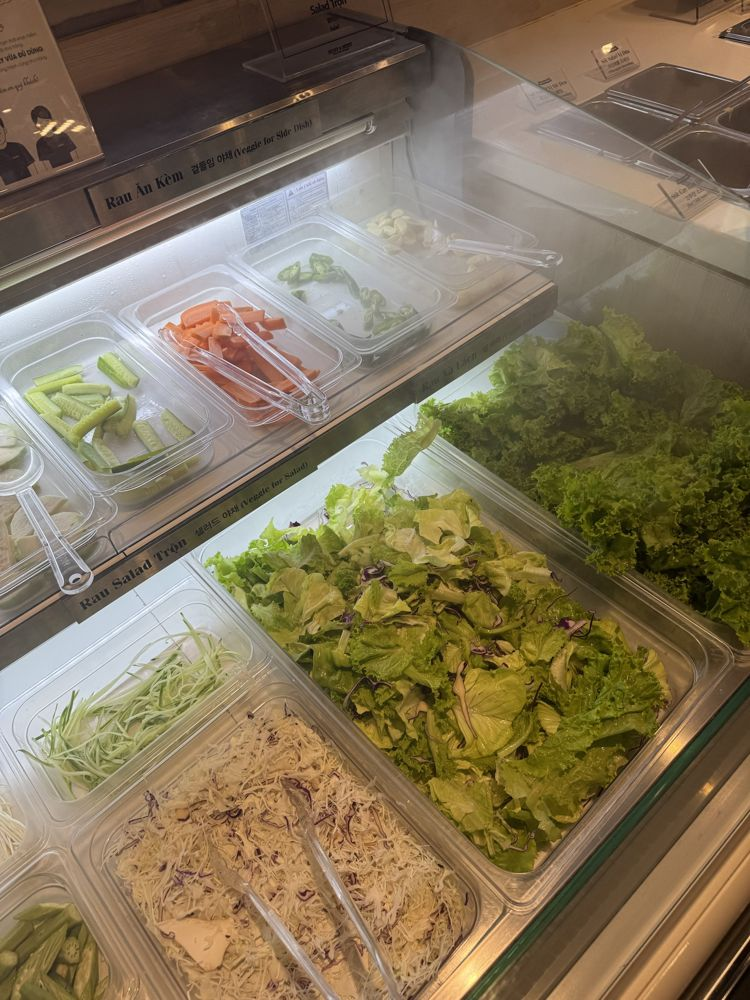
따뜻한 코너에는 치킨과 양념치킨, 잡채, 김치만두 튀김, 한국식 찹쌀 도넛이 있었어요. 이런 건 아이들이 고기보다 먼저 손이 갈 것 같더라고요.
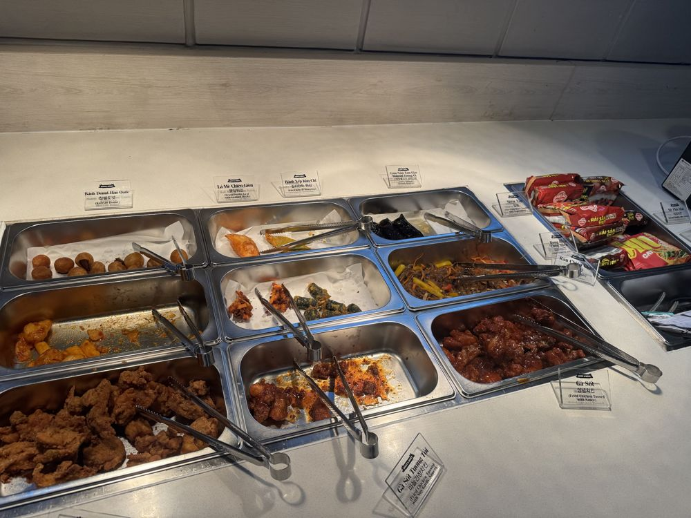
라면 코너도 있어요. 치즈라면, 짜장라면, 해물라면 중에 고르면 직원분이 끓여주시는 방식이에요. 고기를 잘 안 먹는 날에도 한 그릇 먹이면 되니까 든든하죠.
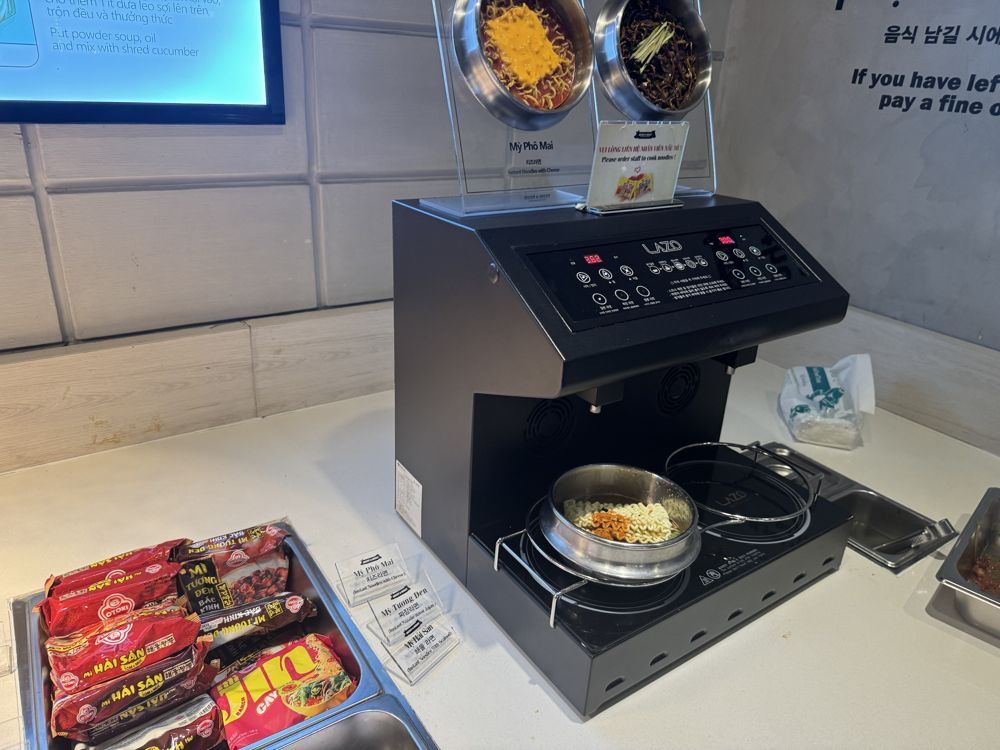
마지막은 역시 아이스크림이죠. 그리고 탄산음료는 셀프 디스펜서에서 마음껏 따라 마실 수 있었어요.
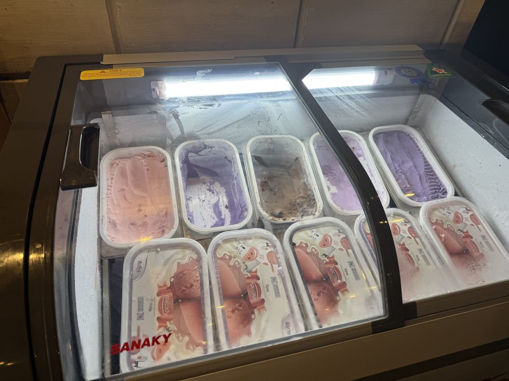
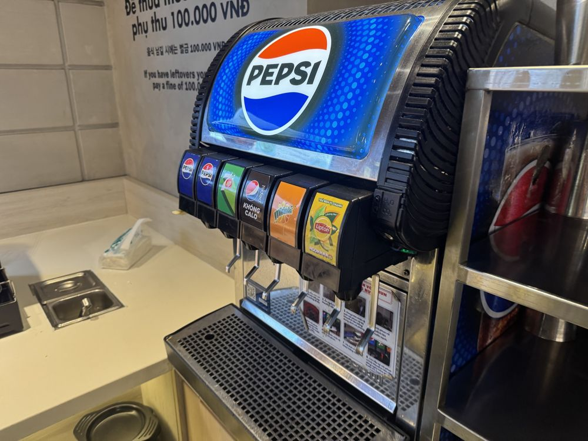
치킨, 도넛, 라면, 아이스크림에 밥까지 다 있으니, 아이 입맛 걱정 없이 어른은 고기에 집중할 수 있어요. 참고로 음식을 남기면 100,000동을 내야 한다는 문구가 벽에 붙어 있었어요. 그래서 조금씩 덜어다 먹는 습관을 들이면 좋겠더라고요.
다음에도 생각날 것 같아요
투티엠 티소몰 안에서 깔끔하게 고기 먹고 싶을 때 가볍게 들르기 좋은 곳이었어요. 숯불에 직접 구워 먹는 재미도 있고, 가격도 부담스럽지 않았어요. 콤보까지 갈 필요 없이 기본 코스만으로도 만족스러울 것 같고요. 고기가 아니어도 좋아요. 가끔은 아이들이 좋아하는 치킨이랑 튀김, 라면을 실컷 먹이고 싶을 때 가성비 부페로 이용하기 딱 좋을 것 같아요.
다음 편에서는 또 다른 호치민 생활 이야기로 찾아올게요.